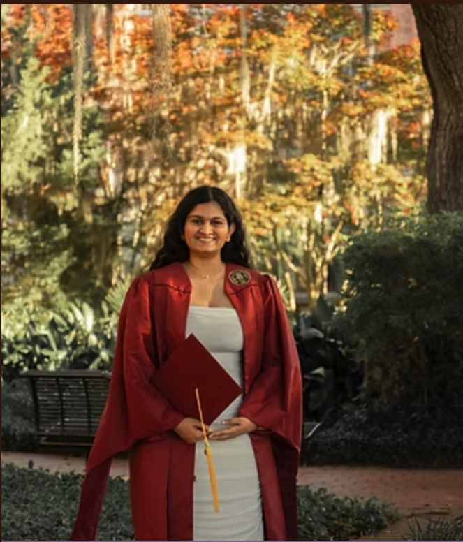
Co-Chair2nd Year · Financial Mathematics
Samadhi Herath Pathirannehelage
Samadhi works on optimal control problems in principal-agent models.
About the council
The Graduate Student Council is made up of mathematics graduate students who help represent the graduate community, strengthen communication, and support academic and social engagement across the department.
Our members come from different mathematical areas and research backgrounds, but share a common goal: making graduate student life more connected, visible, and collaborative.
Council leadership
Officers coordinate council activities, maintain communication, and help carry graduate student priorities forward.

Co-Chair2nd Year · Financial Mathematics
Samadhi works on optimal control problems in principal-agent models.
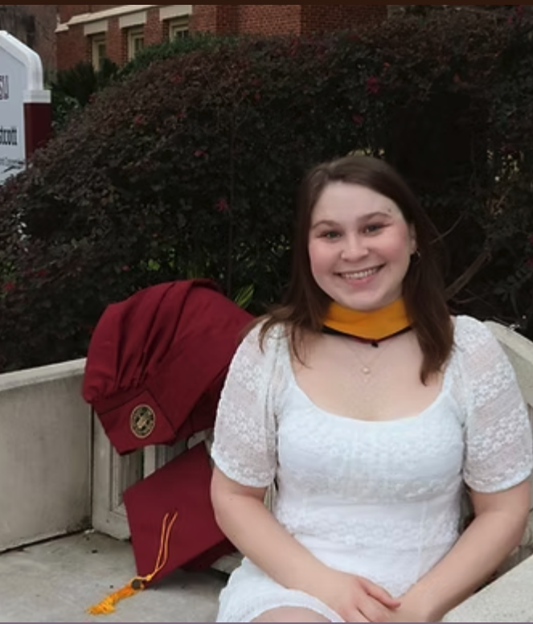
Co-Chair3rd Year · Biomathematics
Callie studies nonlinear random walks on networks and how dynamics shape the perception of network structure.
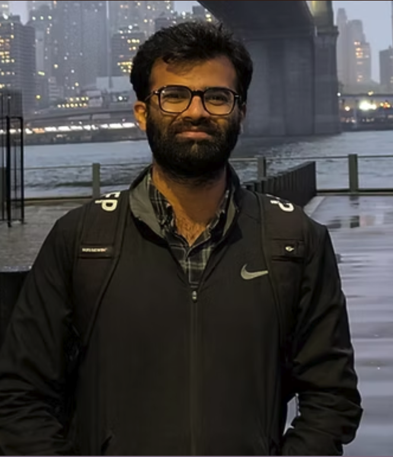
Secretary4th Year · Pure Mathematics
Mujtaba's research is in topological data analysis, using ideas from topology to study the shape and structure of data.
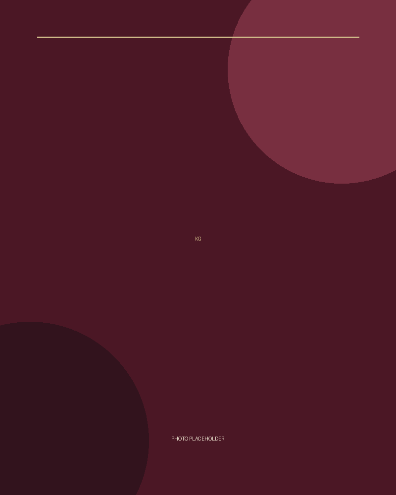
Treasurer4th Year · Biomathematics
Member biography will be added soon.
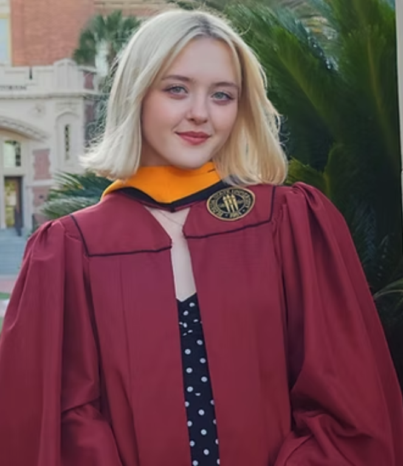
Social Media Chair3rd Year · Biomathematics
Rachel uses mathematical modeling and computational simulation to study biofilm structure, nutrient properties, and chemical signaling.
Graduate representation
Graduate students contributing their research perspectives, experiences, and ideas to the work of the council.
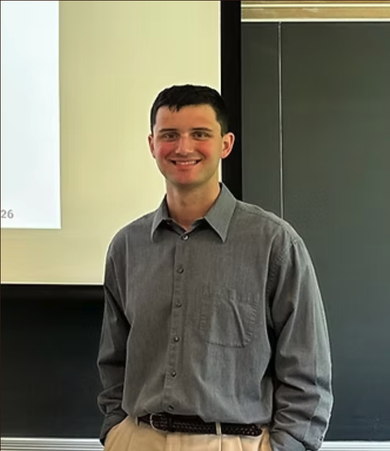
3rd Year · Biomathematics
Member biography will be added soon.
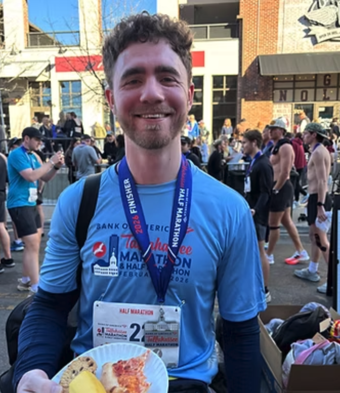
3rd Year · Financial Mathematics
Daniel's research interests include stochastic optimal control and numerical methods, with applications in financial mathematics.
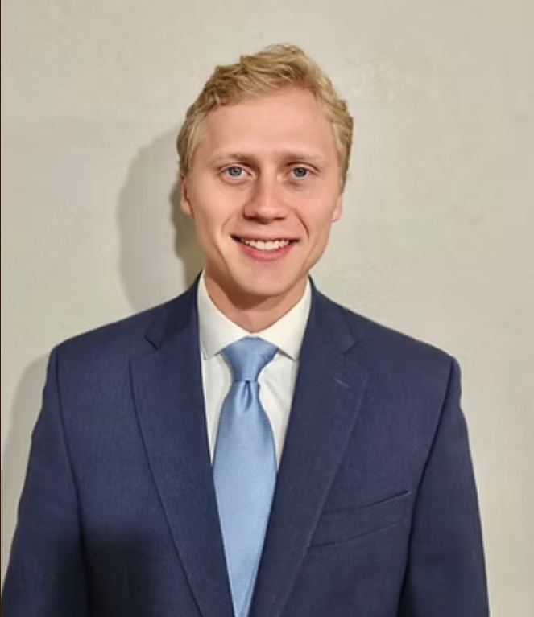
3rd Year · Biomathematics
Gustav uses mathematical models to study molecular movement, interactions, reaction rates, and molecular dynamics.
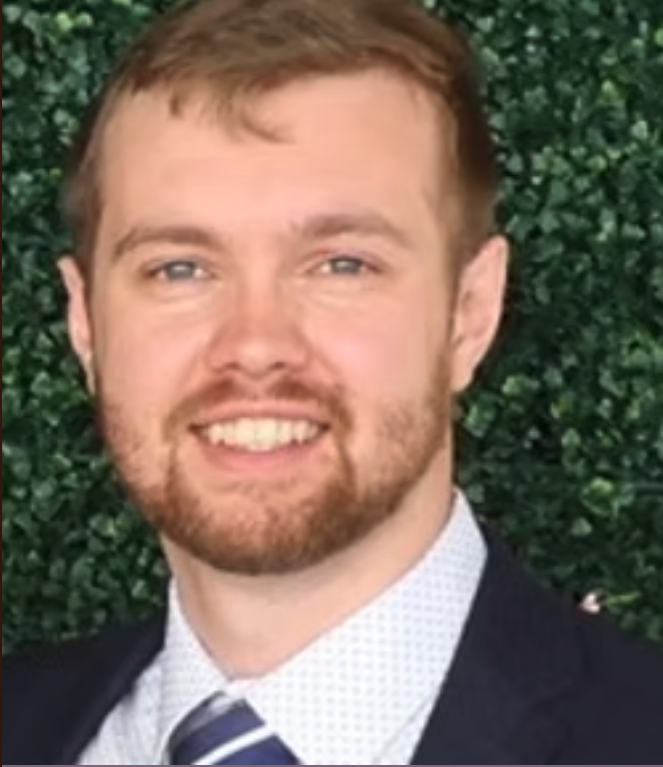
2nd Year · Financial Mathematics
Brayton's research is primarily concerned with signature methods in machine learning and applications of signature kernels.
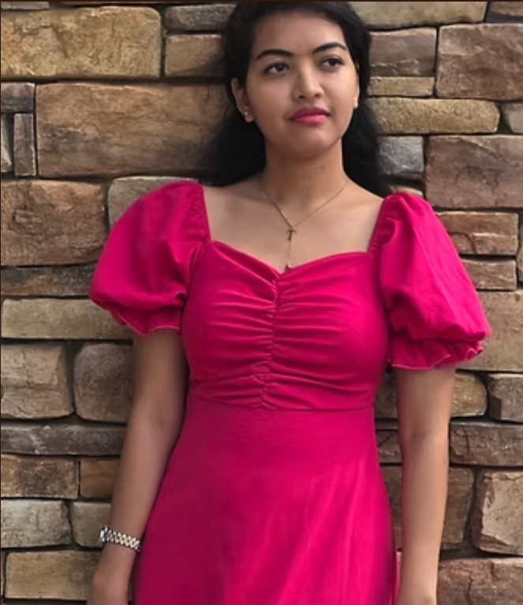
3rd Year · Biomathematics
Toma is a Ph.D. student in Biomathematics whose research focuses on complex networks.
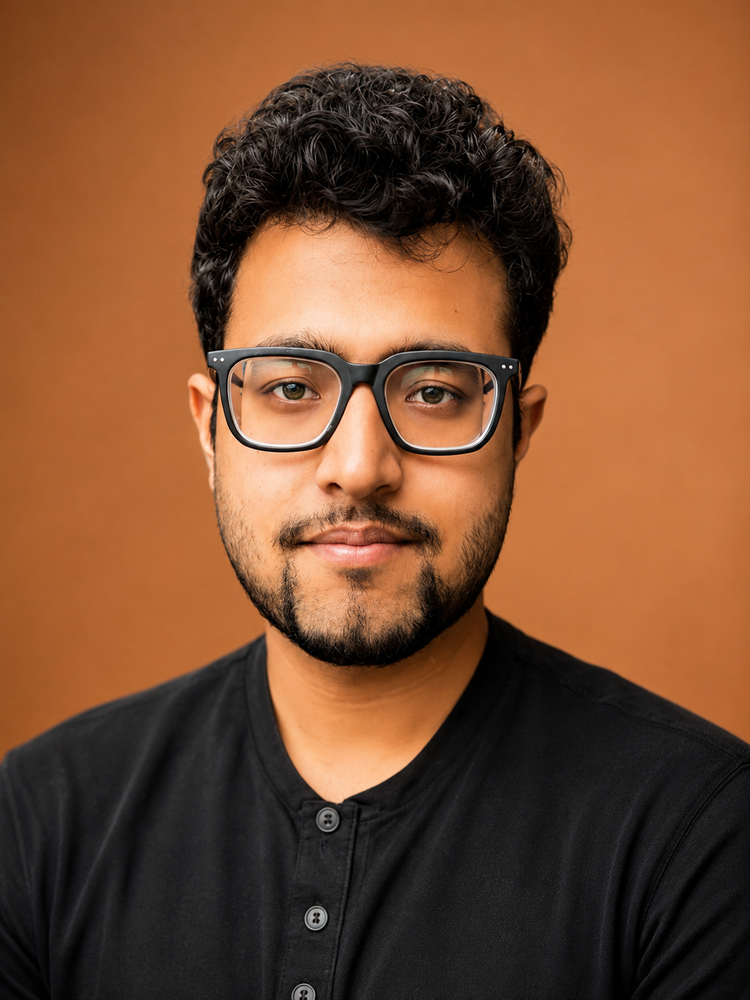
3rd Year · Financial Mathematics
Reyajul's research focuses on stochastic optimal control and mean field control.
Contribute to the community
Graduate students can contribute through council service, event planning, communication, and new initiatives for the mathematics graduate community.
Learn how to get involved